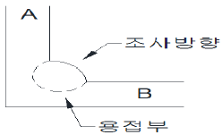

방사선비파괴검사기사 (2015-09-19 기출문제)
1과목: 비파괴검사 개론
1. 다음 중 얇은 시험체의 두께 측정이 가능한 비파괴검사법은?
- 침투탐상검사
- 누설검사
- 음향방출시험
- 와전류탐상검사
(정답률: 69%)

2. 다음 중 물질의 손상량 평가법으로 비파괴검사방법인 것은?
- 레프리카법
- 충격시험법
- 크리프시험법
- 피로시험법
(정답률: 67%)
3. 침투탐상시험에서 침투능력과 관계되는 물리적 성질과 거리가 먼 것은?
- 표면 장력
- 모세관 현상
- 내부식성
- 점성
(정답률: 70%)
4. 핵연료봉과 같은 높은 방사성 물질의 검사에 적합한 비파괴검사 방법은?
- 입자가속기를 이용한 고에너지 엑스선투과검사
- Co-60을 이용한 중성자투과검사
- 직접법을 이용한 중성자투과검사
- 전사법을 이용한 중성자투과검사
(정답률: 35%)
5. 다음 중 침투탐상시험과 비교하여 자분탐상시험의 장점으로 올바른 것은?
- 절연체인 재료도 탐상할 수 있다
- 비철금속 재료도 탐상할 수 있다
- 페인트 처리된 강 재료도 탐상할 수 있다.
- 표면이 복잡한 형상의 시험체도 쉽게 탐상할 수 있다
(정답률: 70%)
6. 표면경화용 침탄용강이 구비하여야 할 조건으로 가장 적합한 것은?
- 저탄소강이어야 한다.
- 중탄소강이어야 한다.
- 고탄소강이어야 한다.
- 탄소 함유량에 관계없다.
(정답률: 60%)
7. 금속의 가공성이 우수하며, 귀속 원자 수가 4개인 격자는?
- 체심입방격자
- 면심입방격자
- 조밀육방격자
- 단순입방격자
(정답률: 61%)
8. 스테인리스강의 조직에 해당되지 않는 것은?
- 페라이트
- 마텐자이트
- 시멘타이트
- 오스테나이트
(정답률: 59%)
9. 강중의 잔류 오스테나이트를 마텐자이트로 변태시킬 목적의 열처리는?
- 템퍼링 처리
- 마퀜칭 처리
- 서브제로 처리
- 오스포밍 처리
(정답률: 31%)
10. 구상흑연주철에 관한 설명으로 옳은 것은?
- 접종제로는 주로 Zn이 사용된다.
- 불스아이(bull's eye) 조직을 갖는다.
- 조직은 시멘타이트와 베이나이트이다.
- 내마모용으로 비강도가 매우 높다.
(정답률: 55%)
11. 분말야금법의 특징을 설명한 것 중 틀린 것은?
- 가공 정밀도가 높다.
- 절삭가공 생략이 가능하다.
- 제품의 크기에 제한이 없다
- 공공이 분산된 재료의 제조가 가능하다.
(정답률: 34%)
12. 구리(Cu)의 특성을 설명한 것 중 틀린 것은?
- 전기, 열의 양도체이다.
- 전연성이 좋으므로 가공이 용이하다.
- 체심입방격자이며, 비중이 약 10.8이다.
- Zn, Sn, Ni, Au, Ag 등과 용이하게 합금을 만든다.
(정답률: 60%)
13. 재료에 어떤 일정한 하중을 가하고 어떤 온도에서 긴 시간을 경과함에 따라 그 스트레인을 측정하여 각종 재료의 역학적 양을 결정하는 시험은?
- 피로시험
- 전단시험
- 인장시험
- 크리프시험
(정답률: 32%)
14. Al-Cu계 합금의 석출 과정을 올바르게 나타낸 것은?
- G.P(I) → G.P(II) → 과포화 고용체 → θ′ → θ
- G.P(II) → G.P(I) → 과포화 고용체 → θ → θ′
- 과포화 고용체 → G.P(I) → G.P(II) → θ′ → θ
- 과포화 고용체 → G.P(II) → G.P(I) → θ → θ′
(정답률: 54%)
15. 열전대로 사용되는 알루멜 합금의 주요 조성으로 옳은 것은?
- NI - Al - Fe
- Al - Cr - Co
- Ni - Mg - Cu
- Al - Mn - Pb
(정답률: 56%)
16. 피복 아크 용접시 피복제의 역할에 대한 설명으로 틀린 것은?
- 용착금속의 기계적 성질을 좋게 한다.
- 스패터의 발생을 많게 한다.
- 용착금속의 급냉을 방지한다.
- 아크의 안정을 좋게 한다.
(정답률: 64%)
17. 아크용접에서 아크를 끊는 순간에 생기며, 용융풀(pool)의 응고 수축에 의한 오목형상으로 편석이 생기기 쉬운 곳을 의미하는 용어는?
- 엔드탭
- 크레이터
- 비드 시점
- 스카핑
(정답률: 57%)
18. 서브머지드 아크 용접의 장점으로 틀린 것은?
- 고전류 사용이 가능하다.
- 비드의 외관이 아름답다.
- 기계적 성질이 우수하다.
- 홈가공의 정밀을 요한다.
(정답률: 38%)
19. 용접기의 무부하전압 100V, 아크전압이 40V, 아크전류가 300A이고, 내부손실이 5kW이면 용접기의 효율과 역률은 약 얼마인가?
- 효율 70.6% , 역률 56.7%
- 효율 56.7& , 역률 70.6%
- 효율 53.0% , 역률 58.5%
- 효율 58.3% , 역률 53.0%
(정답률: 24%)
20. 용접부에 발생하는 비틀림 변형을 줄이기 위한 시공 상의 주의사항으로 틀린 것은?
- 용접시 적당한 지그를 활용할 것
- 용접부에 집중 용접을 피할 것
- 이음부의 맞춤을 정확하게 할 것
- 용접순서는 구속이 작은 부분부터 용접할 것
(정답률: 66%)
2과목: 방사선투과검사 원리
21. 공업용 X선 발생장치의 표적(Target) 물질로 가장 많이 사용되는 것은?
- 구리
- 탄소
- 납
- 텅스텐
(정답률: 82%)
22. 원자번호가 74인 텅스텐을 표적재료로 사용한 X선발생장치에 300kVp 의 관전압과 6mA의 관전류를 걸었을 때 X선이 발생되는 효율은?
- 1.8%
- 3.1%
- 13.0%
- 21.1%
(정답률: 38%)
23. 다음 중 촬영하지 않은 필름의 취급시 고려해야 할 사항으로 적당하지 않은 것은?
- 필름통을 개봉한 후에는 될 수 있는 대로 빨리 사용한다.
- 필름보관함에는 건조제를 넣어 둔다.
- 필름 취급시 지문이 묻어도 현상에서 제거되므로 허용된다.
- 필름은 빛이나 압력으로부터 보호한다.
(정답률: 79%)
24. 방사성동위원소인 Ir-192 100Ci 가 30일이 경과한 후에는 약 몇 Ci가 되는가? (단, Ir-192 의 반감기는 75일로 한다)
- 68.9Ci
- 75.8Ci
- 83.8Ci
- 131.9Ci
(정답률: 86%)
25. 다음 중 X선관의 고장 원인이 아닌 것은?
- X선관의 냉각
- 외부의 기계적인 충격
- 장비를 과부하로 사용
- X선관 용기내의 절연불량
(정답률: 78%)
26. 방사선 투과사진에서 점상, 선상 또는 수지상으로 흑화된 정전기마크가 발생하는 것을 방지하기 위한 방법을 설명한 것으로 틀린 것은?
- 암실, 보관함 등의 누설 광선을 검사한다.
- 암실 및 취급 장소의 습도를 조정한다.
- 접지시켜 정전기를 제거한다.
- 정전기 발생이 쉬운 고무, 화학섬유의 사용을 피한다.
(정답률: 59%)
27. 방사선 선질계수(μ) 와 산란비(n)는 방사선투과사진 상질에 μ/(1+n)으로 영향을 미친다고 한다. 강판 두께가 20mm인 경우 μ/(1+n) 값이 다음 중 가장 작은 것은?
- 175kVp X선 장치
- Ir-192
- Co-60
- 250kVp X선 장치
(정답률: 39%)
28. 방사선비파괴검사에서 방사선 관리의 가장 큰 목적으로 옳은 것은?
- 방사선의 이용, 활동을 확대키 위해
- 방사선 관리자의 권한을 강화키 위해
- 방사선을 효율적으로 이용하고 안전취급을 위해
- 학문적, 기술적으로 피폭을 정의하기 위해
(정답률: 81%)
29. 높은 투과사진 콘트라스트를 얻기 위해 가능한 한 작아지도록 촬영조건을 선택해야하는 것은?
- 선 흡수계수
- 기하학적 보정계수
- 산란비
- 필름콘트라스트
(정답률: 56%)
30. 다음 중 연속에너지 스펙트럼(spectrum)을 나타내는 방사선은?
- 특성 X선
- α선
- 제동 X선
- γ선
(정답률: 47%)
31. 다음 중 β선과 γ선의 공통적인 특징은?
- 전리작용이 있다.
- 광전효과가 크다.
- 광속도로 이동한다.
- 에너지 손실과정이 같다.
(정답률: 79%)
32. 저에너지 감마선원으로 반감기가 가장 짧아 선원의 안정적인 공급이 중요한 선원은?
- Gd-153
- Se-75
- Yb-169
- Co-60
(정답률: 42%)
33. 방사선투과사진의 관찰에 가장 영향을 적게 미치는 것은?
- 관찰실의 밝기
- 관찰기의 밝기
- 관찰자의 시력
- 규정된 농도 범위를 갖는 필름
(정답률: 67%)
34. Ir-192 선원으로 강 용접부를 촬영할 때, 시험체의 두께가 증가할수록 투과사진의 콘트라스트가 감소하는 경향을 보이는데 그것은 주된 원인은?
- 흡수계수가 감소하여
- 필름 콘트라스트가 변하므로
- 산란비가 증가하여
- 방사선의 에너지가 변하므로
(정답률: 59%)
35. 1초(second)마다 7.4X1011개의 핵이 붕괴되는 Ir192 방사능의 세기는 얼마인가?
- 2Ci
- 10Ci
- 20Ci
- 74Ci
(정답률: 80%)
36. 다음 중 방사선 투과사진상의 콘트라스트를 감소시키는 것은?
- 선원과 물체간의 거리를 증가시킨다.
- 물체와 필름의 거리를 감소시킨다.
- 초점 또는 선원의 크기를 증가시킨다.
- X선 발생장치의 관전압을 감소시킨다.
(정답률: 63%)
37. 물체는 온도에 따라 복사선을 방출한다. 온도가 높아질 때 복사선의 파장은?
- 길어진다.
- 짧아진다.
- 일정하다.
- 경우에 따라 다르다.
(정답률: 52%)
38. 방사선투과사진의 콘트라스트에 관한 설명으로 옳지 않은 것은?
- 두께 차이에 비례한다.
- 흡수계수에 반비례한다.
- 방사선 산란비에 반비례한다.
- 필름 콘트라스트에 비례한다.
(정답률: 42%)
39. 다음 중 방사선 측정단위가 아닌 것은?
- Rad
- R
- RBE
- Rem
(정답률: 79%)
40. 필름의 농도가 3.0 이면 이 필름을 입사한 광은 투과한 광의 밝기의 몇배가 되겠는가?
- 3배
- 30배
- 100배
- 1000배
(정답률: 61%)
3과목: 방사선투과검사 시험
41. 방사선계측법으로 방사선투과검사를 할 때, 다음 중 판단하기 어려운 것은?
- 결함의 유무
- 두께 측정
- 내부 결함의 상태
- 방사선의 강도
(정답률: 43%)
42. 자동 방사선투과검사(Autoradiography)에서 밀봉되지 아니한 핵연료봉에 대한 방사성 물질의 농도 검사시 시편과 필름사이에 두께가 균일하지 않은 재질을 사용하면 어떤 결과가 나타나는가?
- 미시방사선(micro-radiograph) 투과사진
- 전자방사선(electron radiograph) 투과사진
- 섬광방사선(flash radiograph)투과사진
- 중성자방사선(neutron radiograph) 투과사진
(정답률: 24%)
43. 두께 20mm인 검사체를 SFD 300mm 로 방사선 투과 검사를 하고자 한다. 초점의 크기는 1.5mm 이고 필름과 검사체는 밀착되어있다 이 검사체의 표면으로부터 10mm 깊이에 있는 지름 3mm인 기공의 기하학적 불선명도는 얼마인가?
- 0.5mm
- 0.1mm
- 0.⑤mm
- 0.01mm
(정답률: 38%)
44. 아래[그림] 과 같은 촬영배치를 가진 100% 용입된 모서리 용접부의 촬영시 방사선의 조사방향이 A면에 가깝도록 하는 이유로 옳은 것은?

- A면에 존재하는 라미네이션의 검출을 용이하게 하기 위하여
- B면에 존재하는 라미네이션의 검출을 용이하게 하기 위하여
- 방사선이 투과되는 용접부에서의 상대적인 두께차를 줄이기 위하여
- 방사선이 투과되는 용접부에서의 상대적인 두께차를 크게 하기 위하여
(정답률: 63%)
45. 다음 중 초점크기를 가장 작게 만들 수 있는 방사선원은?
- 공업용 X선 발생장치
- Cs-137 γ선 조사장치
- 베타트론(Betatron)
- 반데그라프 발생장치(Linac)
(정답률: 47%)
46. 용접 종지부에서 발견되는 별 모양의 결함은 다음 중 어느 것인가?
- 크레이터 균열
- 라미네이션
- 피로 균열
- 슬래그 개재
(정답률: 69%)
47. 균열 면상 결함의 크기를 측정하기 위해 세 방향에서 방사선을 조사하였다. 검출을 가장 잘하기 위한 입사각도로 옳은 것은?
- 5~8˚정도
- 10~15˚정도
- 20~25˚정도
- 30~40˚정도
(정답률: 36%)
48. 필름의 정착처리에 대해 잘못 설명한 것은?
- 현상과 비교하여 오래 두어도 크게 문제가 생기지는 않는다.
- 노후된 정착액은 능력의 저하를 시간의 연장으로 보완할수도 있다.
- 노후된 정착액은 황색얼룩 등을 일으킬수 있다.
- 초기 정착액보다 정착시간이 3배정도 되면 교환된다.
(정답률: 66%)
49. 400kVp X선 발생장치와 가장 비슷한 에너지를 갖는 감마선원은?
- Cs-137
- Ir-192
- Tm-170
- Co-60
(정답률: 49%)
50. 피사체 콘트라스트에 영향을 미치는 인자가 아닌 것은?
- 시험체의 두께차
- 방사선의 선질
- 필름의 종류
- 산란방사선
(정답률: 86%)
51. 방사선 투과검사의 현상처리에 관한 설명으로 옳은 것은?
- 정착액의 온도는 일반적으로 18~24˚C 정도를 유지하는 것이 바람직하다.
- 정지액은 일반적으로 5~10˚의 차가운 온도를 유지하고 현상액과 중화하여 사용하여야 한다.
- 암실의 온도는 일반적으로 30˚C 이상을 유지하여야 하며, 상대습도는 25% 이하로 건조해야 좋다.
- 정착한 후 흐르는 물에 예비 수세시 아황산소다의 2% 용액에 침지하면 수세시간을 충분히 연장 할 수 있다.
(정답률: 65%)
52. 납판 중앙에 작은 구멍(pin hole)을 뚫어 X선발생장치와 필름 중간 지점에 설치한 후 촬영하는 목적을 옳게 설명한 것은?
- 연속 X선을 여과하기 위함이다.
- 초점의 크기를 측정하기 위함이다.
- 방출되는 중심선의 강도를 측정하기 위함이다.
- 방출되는 X선의 강도분포를 측정하기 위함이다.
(정답률: 79%)
53. 오스테나이트계 스테인리스강 용접부의 투과사진 촬영에서 실제로 결함이 아닌데 방사선의 간섭현상에 의해 결함처럼 나타나는 상은?
- 무늬(fringe)
- 블루밍(blooming)
- 인공흠(artifacts)
- 반점상(motting image)
(정답률: 58%)
54. 결함의 발생원인 중 제조과정(Processing)의 결함의 조합으로 묶어진 것은?
- 부식(corrosion), 피로(fatigue)
- 콜드셧(cold shut), 라미네이션(lamination)
- 파열(burst), 프레이크(flake)
- 게재물(inclusion), 용입부족(incomplete penetration)
(정답률: 60%)
55. Ir-192 30Ci 인 선원에 대하여 38cm인 철판을 차페체로 사용했다면 차폐체를 투과한 강도는 약 몇Ci인가? (단, 철판에 대한 Ir-192의 반가층은 약15cm 이다.)
- 3.7Ci
- 5.2Ci
- 7.5Ci
- 10.4Ci
(정답률: 52%)
56. 다음 중 판독실에서 투과사진 상을 식별하는데 가장 영향을 미치지 않는 것은?
- 투과도계의 종류
- 관찰자의 시력
- 필름 관찰기의 밝기
- 관찰 장소의 밝기
(정답률: 74%)
57. 다음 중 방사선투과검사시 증감지(screen)를 사용하지 않아도 좋은 경우는?
- 고에너지의 방사선을 사용할 때
- 산란선에 의한 불필요한 감광을 무시할 때
- 노출시간을 단축하고자 할 때
- 저전압(100kVp이하)의 X선을 사용할 때
(정답률: 46%)
58. X선관의 필라멘트는 점화되어 있으나 관전류계 바늘이 움직이지 않는 원인은 다음 중 어느 것인가?
- X선관의 파손
- 양극회로의 접속불량
- 가열용 변압기의 단선
- 필라멘트 회로의 접속불량
(정답률: 38%)
59. 방사선 투과검사에 사용되는 연박스크린은 1차 방사선에 노출되면 필름의 사진작용을 일으키는 2차 방사선을 방출하게 된다. 다음 중 이러한 사진작용을 일으키는 2차방사선은 어느 것인가?
- α입자
- 양자
- 전자
- γ선
(정답률: 64%)
60. X선, γ선에 의한 방사선 투과 촬영시 시험체에서 발생된 산란선을 필름에 도달되지 못하게 하는 것들은?
- Filter, Mask
- Cone, Diapgram
- Grid, Lead Screen
- Cassette, Shim Stock
(정답률: 55%)
4과목: 방사선투과검사 규격
61. ASTM E 99 표준사진에서 표시하는 결함의 정의가 잘못된 것은?
- 슬래그혼입 : 용착금속과 모재사이에 혼입된 비금속 고체 물질
- 기포 : 금속내의 가스 및 공동
- 균열 : 금속내에 가늘게 분리되어 생기는 결함
- 융합 불량 : 용착금속이 용입되어 있지 않아 생기는 결함
(정답률: 75%)
62. 강 용접 이음부의 방사선 투과시험방법(KS B 0845)에서 강관의 원둘레 용접 이음부에 대한 상질의 종류가 아닌 것은?
- A급
- B급
- P1급
- F급
(정답률: 70%)
63. 강 용접 이음부의 방사선 투과 시험 방법(KS B 0845) B급 상질의 규정에서 선원과 필름간의 거리(L1+L2)는 시험부의 선원측 표면과 필름간의 거리(L2)의 몇 배 이상이어야 하는가?
- 4배 이상
- 5배 이상
- 6배 이상
- 7배 이상
(정답률: 35%)
64. 강 용접 이음부의 방사선 투과시험방법(KS B 0845)에서 규정한 A급 방사선투과사진의 농도 범위는?
- 1.0이상 2.0이하
- 2.0이상 3.0이하
- 1.3이상 4.0이하
- 1.8이상 4.0이하
(정답률: 45%)
65. 방사선 검출기 중 비례계수관과 GM계수관에 대한 비교 설명으로 틀린 것은?
- 2가지 모두 불감시간이 같다.
- 모두 가스 증폭작용을 활용한다.
- GM계수관은 출력전압이 수 V 정도이다.
- 모두 기체의 이온화를 이용하여 검출한다.
(정답률: 40%)
66. 다음 중 기체의 전리를 이용한 방사선계측기는?
- G-M 계수
- NaI(Tl)형광 계수관
- 체렌코프 계수관
- ZnS(Ag)형 계수관
(정답률: 69%)
67. 보일러 및 압력용기의 방사선투과검사(ASME Sec. V, Art.2)에서 규정하는 투과사진의 농도범위를 설명한 것으로 틀린 것은?
- X선 발생자치를 사용하는 경우 투과사진의 최소 농도는 2.0이다.
- γ선원을 사용하는 경우 투과사진의 최소농도는 2.0이다.
- 투과사진의 최대 농도는 4.0을 초과하지 않아야 한다.
- 다중필름 촬영의 경우 투과사진의 최소 농도는 각 장이 최소 1.3의 농도를 가져야한다.
(정답률: 42%)
68. 주강품의 방사선투과 시험방법(KS D 0227)에서 주강품의 복합필름 촬영방법으로 사진농도를 측정할 때, 2장 포개서 관찰하는 경우 각각 투과사진의 최저농도는 얼마인가?
- 0.3
- 0.5
- 0.8
- 1.0
(정답률: 34%)
69. 원자력 안전법 관계법령에 의하여 건강진단을 실시해야 하는 시기에 관한 내용으로 옳지 않은 것은?
- 최초 방사선 작업에 종사하기 전에 실시한다.
- 방사선작업에 종사 중인 자의 경우 매년 실시한다.
- 원자력법 시행령에서 규정한 선량한도를 초과한 경우 실시한다.
- 방사선작업종사자가 전년도 건강진단 이후 12개월간 피폭선량이 원자력법 시행령에서 규정하는 종사자의 선량한도를 초과하지 않는 경우는 생략할 수 있다.
(정답률: 83%)
70. 원자력법령에서 정한 방사선 작업에 종사하기 않는 일반인의 연간 유효선량한도는 얼마인가?
- 1mSv
- 12mSv
- 15mSv
- 50mSv
(정답률: 74%)
71. 방사성동위원소 등을 생산 및 판매를 하고자 하는 장의 행정절차로 옳은 것은?
- 한국원자력연구원의 허가를 받아야 한다.
- 한국원자력연구원에 활동주체 승인을 받아야 한다.
- 원자력안전위원회의 허가를 받아야 한다.
- 교육부장관의 승인을 받아야 한다.
(정답률: 55%)
72. ASTM E 446은 두께 2인치 미만의 주물에 대한 표준 대비필름(Standard Reference Film)에 대한 규격이다. 이 규격에 의하면 결함의 종류에 따라 범주 A부터 G까지 분류하고 있다. 균열의 경우는 범주 어디에 포함되는가?
- A
- CA
- D
- F
(정답률: 36%)
73. 원자력안전법 시행령에서 정한 방사선관리구역 수시출입자에 대한 수정체의 연간 등가선량한도로 옳은 것은?
- 12mSv
- 15mSv
- 30mSv
- 50mSv
(정답률: 56%)
74. 보일러 및 압력용기에 대한 방사선투과검사(ASME Sec.V , Art.2)에서 강 용접부를 촬영하여 투과도계 부위의 농도가 3.0인 값을 얻었다. 이 방사선 투과사진에서 시험범위 내의 용접부 허용농도 범위는?
- 2.55~3.45
- 2.55~3.90
- 2.10~3.90
- 2.10~3.45
(정답률: 56%)
75. 강 용접 이음부의 방사선 투과시험방법(KS B 0845)에 따라 투과 두께가 12mm인 시험체를 A급 상질이 요구되는 방사선 투과시험으로 촬영할 경우 사용할 계조계는?
- 15형
- 20형
- 25형
- 30형
(정답률: 85%)
76. 다음 중 방사선의 조사선량을 나타내는 단위는?
- Ci
- C/kg
- Gy
- Sv
(정답률: 59%)
77. 알루미늄 평판 접합 용접부의 방사선 투과 시험 방법(KS D0242)에서 모재의 두께가 80mm미만의 시험부 촬영시에는 계조계를 이용하여 시험부와 동시에 촬영한다. 다음 중 계조계의 종류가 아닌 것은?
- C형
- D형
- E형
- G형
(정답률: 56%)
78. 주강품의 방사선투과시험방법(KS D 0227)에 따른 산란선의 저감방법이 아닌 것은?
- 필름의 배면에 1~4mm의 납판을 깐다.
- 가능한 한 넓은 조사실에서 촬영을 한다.
- 시험체는 가능한 한 바닥면에 밀착시킨다.
- 시험체 근처의 바닥면은 납판으로 덮는다.
(정답률: 48%)
79. 알루미늄의 T형 용접부 방사선 투과 시험방법(KS D 0245)에서 방사선투과검사할 경우의 X선 조사방향은 원칙적으로 몇도(˚) 인가?
- 15˚
- 25˚
- 30˚
- 60˚
(정답률: 31%)
80. 어떤 γ선에 대한 선형흡수계수가 8.6625 X 10-1(mm-1)인 물질로 선원을 차폐하여 처음의 선량율을 1/16로 줄이자면 이 차폐체의 최소 두께는?(오류 신고가 접수된 문제입니다. 반드시 정답과 해설을 확인하시기 바랍니다.)
- 8.0mm
- 11.5mm
- 23.0mm
- 32.0mm
(정답률: 34%)